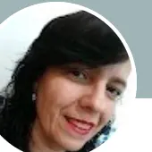
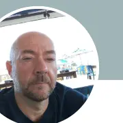

redução no processamento de dados
Especialista em Operação Conectada
Construção • Logística • ERP • WMS • Dados
Faço sistemas funcionarem na operação real.
Conecto ERP, WMS, processos, dados, pessoas e governança para reduzir retrabalho, aumentar o controle e transformar tecnologia em resultado operacional.
40% menos tempo de processamento
até 65%menos tempo operacional
100% mais capacidade de obras
Fundador da
Parceiro


ERP + WMSAderência operacional
Processos + DadosDecisão confiável
redução em atividades operacionais
prazo de implantação reduzido
da jornada logística estruturadas
Resultados obtidos ao longo da trajetória profissional de Gustavo Farias em projetos e operações corporativas.
A ideia que orienta meu trabalho
Do sistema instalado à operação funcionando.
Empresas não perdem valor apenas por falta de tecnologia. Perdem quando processo, sistema, dado, usuário e decisão trabalham separados.
Minha atuação começa pela rotina real: entendo como as áreas executam, onde surgem controles paralelos, quais informações não são confiáveis e por que a tecnologia atual ainda não entrega o resultado esperado.
Depois, transformo esse diagnóstico em processos claros, requisitos objetivos, regras, testes, indicadores, treinamento e governança.
“Eu não quero ser conhecido por dominar ferramentas. Quero ser reconhecido por fazer a operação funcionar.”
Como gero valor
Quatro competências. Uma única operação.
Não trato sistemas, processos, dados e pessoas como projetos separados. Eles precisam sustentar o mesmo resultado.
01
Processos
Da rotina atual ao fluxo que funciona
AS IS, TO BE, BPMN, RACI, aprovações, riscos, responsabilidades e padronização.
- Mapeamento ponta a ponta
- Regras e critérios de decisão
- Melhoria contínua e Lean
02
Sistemas
ERP e WMS aderentes à operação
Requisitos, parametrização, integrações, testes, homologação, implantação e sustentação.
- Sienge e Sankhya
- WMS Senior
- Prevision, Mobuss e SAP
03
Dados
Indicadores que conduzem decisões
Modelagem, qualidade, regras de cálculo, dashboards, integrações e automações.
- Power BI, SQL e Python
- APIs e ETL
- Dicionário de KPIs
04
Adoção
Pessoas preparadas para sustentar
Treinamento por processo, documentação, suporte, trilhas e acompanhamento de uso.
- Universidade Corporativa
- Gestão do conhecimento
- Governança da mudança
Experiências atuais
Atuação complementar em construção, logística e consultoria.
Cada frente possui um foco próprio. Juntas, demonstram capacidade para transitar da estratégia à execução.
Construção e incorporação
Área Incrível Incorporadora
Gestor Corporativo de Sistemas e Transformação OperacionalGovernança e evolução dos sistemas corporativos, com iniciativas compartilhadas no ecossistema Grupo MNGT.
Principais entregas
- Redesenho de 6 macroprocessos da construção.
- Estruturação de 5 jornadas de aprovação.
- Integração entre planejamento, execução, qualidade e medições.
- Portfólio de sistemas, fornecedores, contratos, riscos e prioridades.
Resultados
- 100% mais capacidade de obras acompanhadas no Prevision.
- Maior rastreabilidade e visibilidade executiva.
- Menor dependência de controles paralelos.
Logística e armazenagem
Mais Armazém
Gestor de Sistemas LogísticosTransformação logística e implantação do WMS Senior, conectando operação, sistemas, usuários, fornecedores e integrações.
Principais entregas
- Mapeamento de 8 macroprocessos, da portaria à baixa de estoque.
- Cenários de teste, critérios de aceite e roteiros de homologação.
- Validação de integrações entre WMS, Sankhya, SAP e ERPs de clientes.
- Indicadores de lead time, produtividade, divergências e inventário.
Resultados
- Visão integrada entre 4 ambientes sistêmicos.
- Falhas identificadas antes da entrada em operação.
- Maior segurança para Go-Live e operação assistida.
Consultoria e execução
Cruz & Farias Consultoria
Fundador e Consultor de Operação ConectadaConsultoria especializada em conectar processos, sistemas, dados, pessoas e governança para transformar tecnologia em resultado operacional.
Soluções
- Diagnóstico Executivo Conecta.
- Programa Conecta.
- PMO de Sistemas Fracionado.
- Governança de ERP e WMS.
Parceria estratégica
A Cruz & Farias é parceira da LeverPro, ampliando a capacidade de conectar negócio, processos, tecnologia e execução.
Conhecer a parceria →Base da transformação
Da execução operacional aos sistemas corporativos
Uma trajetória construída de baixo para cimaAntes de atuar com ERP, WMS, dados e governança, liderei equipes, controlei materiais, custos, prazos e implantações em campo. Depois, avancei por suporte, BI, automação, integrações e gestão de sistemas.
Execução→Liderança→Suporte→Dados e BI→ERP e WMS→Operação Conectada
Experiências de base
- Vilaurbe: dados, processos, BI e automações.
- Saffi: engenharia de dados e integrações.
- NSF: liderança operacional, projetos e suporte.
Resultado marcante
45 → 32 dias no prazo médio de implantação, com liderança de 12 colaboradores e maior padronização das entregas.
Cases selecionados
Provas de execução, não apenas uma lista de ferramentas.
Experiências apresentadas com transparência, preservando informações confidenciais e distinguindo trajetória profissional de projetos da consultoria.
01
Construção
Governança de ERP conectando planejamento, obra e gestão
Operação com diferentes áreas, obras, aprovações, contratos, medições e sistemas complementares.
Atuação
Mapeamento AS IS/TO BE, matrizes de aprovação, governança de acessos, procedimentos, testes e treinamentos.
100%mais capacidade de obras acompanhadas
02
Logística
Jornada WMS estruturada da portaria à expedição
Fluxos complexos, integrações, cadastros e conhecimento operacional concentrado.
Atuação
Roteiros de teste, critérios de aceite, matriz de pendências, KPIs, treinamento e preparação para Go-Live.
8etapas críticas da jornada estruturadas
03
Dados
Informação integrada para decisões mais rápidas
Dados descentralizados, relatórios demorados e baixa confiança nas informações da gestão.
Atuação
Pipelines, integração de ERP, CRM e APIs, dashboards executivos e automações para oito áreas.
40%menos tempo de processamento
04
Adoção
Universidade Corporativa para sistemas e processos
Treinamentos informais, dúvidas recorrentes e conhecimento dependente de poucas pessoas.
Atuação
Portais, trilhas por sistema, vídeos, manuais, fluxos, políticas e checklists orientados à regra de negócio.
1base central de conhecimento e capacitação
Fonte verificável
Recomendações publicadas no LinkedIn
Confiança construída na prática
O que dizem profissionais que acompanharam meu trabalho.
Seis depoimentos reais sobre ERP, resolução de problemas, suporte, treinamento, implantação, melhoria de processos, colaboração e desenvolvimento tecnológico.
6depoimentos reais
2023–2026histórico verificável
6perspectivas profissionais
Mariano Latorre Bragion
Coordenador Administrativo e Financeiro | Especialista em Processos, ERP e Fluxo de Caixa | Indicadores, Power BI e Gestão de Equipes | Melhoria Contínua e Produtividade
“Sua capacidade de traduzir problemas técnicos complexos em soluções práticas é rara, e seu jeito de sempre “achar uma saída” já salvou mais de um projeto.”

Lisandra Ferreira
Financeiro
“Tive a oportunidade de acompanhar o trabalho do Gustavo Farias no Grupo MNGT, principalmente no suporte aos usuários, treinamentos e definição de processos operacionais dentro dos Sistemas.”
Taiane Binte
Analista Financeiro Sênior
“Tenho o prazer de trabalhar com o Gustavo e posso afirmar que é um profissional comprometido, responsável e muito dedicado ao que faz. Sempre demonstra disposição para colaborar com a equipe.”
Lorenna Scarelli
Gestão Comercial | Vendas | Estratégias Criativas | CS | Expansão de Negócios | Franchising
“Gustavo é um ótimo profissional. Competente, atencioso e ajudou meu setor a alavancar e melhorar os resultados em automação comercial com a implantação de sistemas e suporte técnico de qualidade.”
Daniele Rodrigues
Analista Jurídico | Analista Administrativo | Advogada
“Excelente profissional. Muito dedicado e atencioso. Colaborou muito para o desenvolvimento tecnológico do nosso departamento jurídico.”

Rodrigues Ademir
Professor na Unicep Universidade Central Paulista e Analista de RH na Cerebra
“Gustavo, excelente profissional, muito dedicado, busca conhecimento incansavelmente quando algum desafio é atribuído. Em seus relacionamentos interpessoais, possui comportamentos assertivos, paciente e muito colaborativo.”
Transparência: os textos são reproduções das recomendações recebidas. O botão “Ler recomendação completa” apresenta o relato integral, e o LinkedIn permanece disponível para validação da fonte.
Método proprietário
Método Conecta
Uma sequência para transformar diagnóstico em mudança sustentada — sem começar pela ferramenta.
Compreender
Estratégia, objetivo e impacto.
Observar
Rotina real, exceções e controles.
Normalizar
Dados, cadastros e critérios.
Estruturar
Processo futuro e responsabilidades.
Conduzir
Requisitos, testes e implantação.
Treinar
Regra de negócio e execução.
Acompanhar
Indicadores, adesão e evolução.
Projetos e demonstrações
Aplicações públicas e provas técnicas.
A classificação indica o nível de evidência de cada entrega: experiência aplicada, demonstração técnica ou ativo estratégico.
GOVSistemas • Processos • Conhecimento
Experiência aplicada
Universidade Corporativa MNGT
Central de treinamentos, procedimentos, fluxos por sistema, governança e acesso rápido ao conhecimento.
Ver entrega pública →WMSPortaria • Estoque • Expedição
Experiência aplicada
Jornada Operacional WMS
Mapeamento ponta a ponta, testes, critérios de aceite, pendências, indicadores e capacitação.
Conhecer o contexto →BICaixa • Cenário • Decisão
Demonstração técnica
Dashboard de Fluxo de Caixa
Visão diária e projetada de entradas, saídas, saldos e necessidade de capital.
Abrir painel →VGVCustos • Margem • Cenários
Demonstração técnica
Viabilidade Financeira Imobiliária
Análise de VGV, custos, impostos, margem e fluxo financeiro do empreendimento.
Abrir painel →DXDiagnóstico • Prioridade • Roadmap
Ativo estratégico
Diagnóstico Executivo Conecta
Avaliação para identificar retrabalho, baixa utilização de sistemas, riscos e oportunidades.
Acessar diagnóstico →PMODemandas • Fornecedores • Riscos
Ativo estratégico
PMO de Sistemas Fracionado
Modelo para organizar portfólio, contratos, fornecedores, custos, prioridades e evolução dos sistemas.
Conhecer a atuação →Parceria estratégica
Cruz & Farias × LeverPro
A parceria amplia a capacidade de conectar leitura da operação, processos, governança, tecnologia e execução. A Cruz & Farias contribui com diagnóstico, regras de negócio, adoção e gestão; a LeverPro fortalece o ecossistema com soluções e capacidade de entrega.
Conhecer a parceriaSobre Gustavo
Experiência de quem conhece a operação antes da tela.
Minha trajetória começou na execução de projetos e na liderança de equipes. Trabalhei com materiais, estoque, prazos, custos, documentação e clientes antes de avançar para suporte, dados, BI, automação e sistemas corporativos.
Essa base me permite conversar com a diretoria sem perder o detalhe operacional — e conversar com o usuário sem perder o objetivo do negócio.
SiengePrevisionMobussSankhyaWMS SeniorSAPPower BISQLPythonAPIs
Próximo passo
Existe um sistema instalado. A operação está funcionando?
Vamos conversar sobre processos, ERP, WMS, dados, governança ou uma parceria para projetos em construção e logística.